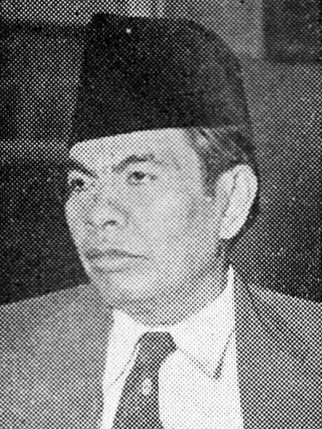

Pengertian Pancasila
Secara etimologis, Pancasila berasal dari bahasa Sanskerta. Kata “panca” berarti lima dan “sila” berarti dasar atau prinsip. Jadi, Pancasila adalah lima prinsip utama yang menjadi fondasi dan pedoman hidup bagi kita sebagai bangsa Indonesia.
Setiap sila dalam Pancasila mencerminkan nilai-nilai moral, sosial, dan politik yang diharapkan menjadi panduan bagi kita semua. Nilai-nilai ini menjaga agar kehidupan bermasyarakat tetap harmonis dalam keberagaman.
Dengan hadirnya Pancasila, kita punya pedoman untuk menciptakan harmoni di antara berbagai suku, agama, dan budaya yang ada di Indonesia. Prinsip-prinsip ini juga menekankan pentingnya toleransi, gotong royong, dan keadilan sosial. Pancasila benar-benar jadi pilar kokoh dalam menjaga persatuan dan kesatuan bangsa kita, deh pokoknya!
💡 Nilai-Nilai Luhur Pancasila
Toleransi Tinggi
Menghargai setiap perbedaan suku, ras, dan agama di Indonesia.
Gotong Royong
Nilai inti kebersamaan dan bahu-bahu membangun peradaban bangsa.
Keadilan Sosial
Menyamakan hak dan kewajiban bagi seluruh lapisan masyarakat.
Sejarah Lahirnya Pancasila
Gagasan tentang dasar negara Indonesia mulai muncul ketika Jepang mengalami kekalahan dalam Perang Dunia II. Proses perjalanannya sangat panjang dan penuh dedikasi.
Pembentukan BPUPKI
Jepang membentuk Badan Penyelidik Usaha-usaha Persiapan Kemerdekaan Indonesia (BPUPKI) setelah menjanjikan kemerdekaan Indonesia. Tugas utamanya adalah merumuskan dasar negara yang kokoh.
Sidang Pertama BPUPKI
Muncul banyak usulan mengenai dasar negara dari tiga tokoh utama nasional kita, yakni Muhammad Yamin, Soepomo, dan Soekarno melalui pidato-pidato brilian mereka.
Lahirnya Pancasila (Pidato Bung Karno)
Pancasila lahir pertama kali diperkenalkan secara istilah lewat pidato bersejarah oleh Soekarno. Tanggal 1 Juni hingga kini terus kita peringati sebagai Hari Lahir Pancasila.
Tokoh-Tokoh Merumuskan Pancasila
Gagasan brilian dari tiga pemikir agung yang menjadi batu pijakan utama ideologi negara kita.

yamin.png
Muhammad Yamin
"Pada tanggal 29 Mei 1945, beliau mengusulkan lima asas dasar negara dalam bentuk pidato dan naskah tertulis."
Usulan Dasar Negara (Rumusan Yamin):
- 1. Peri Kebangsaan
- 2. Peri Kemanusiaan
- 3. Peri Ketuhanan
- 4. Peri Kerakyatan
- 5. Kesejahteraan Rakyat
Panitia Sembilan dan Lahirnya Piagam Jakarta
Guna mematangkan ide dasar negara, dibentuk tim kecil berisi sembilan tokoh utama nasional.
📜 Piagam Jakarta
Hasil rumusan dari Panitia Sembilan sebelum penyesuaian demi menjaga kesatuan wilayah kepulauan Indonesia:
- 1. Ketuhanan, dengan kewajiban menjalankan syariat Islam bagi pemeluk-pemeluknya
- 2. Kemanusiaan yang Adil dan Beradab
- 3. Persatuan Indonesia
- 4. Kerakyatan yang Dipimpin oleh Hikmat Kebijaksanaan dalam Permusyawaratan/Perwakilan
- 5. Keadilan Sosial bagi Seluruh Rakyat Indonesia
⭐ Pancasila dalam UUD 1945
Demi persatuan utuh, PPKI mengesahkan perubahan kalimat sila pertama menjadi sangat harmonis dan universal:
- 1. Ketuhanan Yang Maha Esa
- 2. Kemanusiaan yang Adil dan Beradab
- 3. Persatuan Indonesia
- 4. Kerakyatan yang Dipimpin oleh Hikmat Kebijaksanaan dalam Permusyawaratan/Perwakilan
- 5. Keadilan Sosial bagi Seluruh Rakyat Indonesia
Kedudukan da Fungsi Pancasila
Fungsi utamanya begitu luas dan mencakup setiap aspek bernegara secara fundamental.
Pancasila Sebagai Dasar Negara
Pancasila menjadi sumber utama dari segala hukum yang ada di Indonesia, guys. Ini artinya, setiap peraturan dan undang-undang harus sesuai dengan nilai-nilai yang ada di dalam Pancasila. Dengan adanya Pancasila, hukum di Indonesia jadi lebih kuat untuk menjaga ketertiban dan keadilan di seluruh lapisan masyarakat.
Pancasila ngga cuma penting di aspek hukum, tapi juga dalam menjaga persatuan bangsa kita, guys. Lewat Pancasila, kita diajak untuk saling menghargai perbedaan dan menjunjung tinggi rasa persaudaraan. Inilah yang membuat Pancasila menjadi pondasi utama untuk membangun bangsa yang kuat dan harmonis.
Pancasila Sebagai Ideologi Negara
Guys, Pancasila bukan cuma jadi dasar hukum, tapi juga berfungsi sebagai ideologi negara yang mengarahkan tindakan dan kebijakan pemerintahan. Sebagai ideologi, Pancasila memberikan panduan untuk membangun bangsa dan negara dengan tujuan menciptakan keadilan sosial serta kesejahteraan bagi semua rakyat.
Pancasila juga berperan penting dalam menjaga persatuan dan kesatuan bangsa, guys. Lewat Pancasila, kita diajak untuk selalu menghargai perbedaan dan menjunjung tinggi rasa persaudaraan di tengah masyarakat yang majemuk. Ini membantu kita membangun bangsa yang kuat dan harmonis, di mana keberagaman bukan menjadi penghalang, tapi kekuatan.
Fungsi Pancasila Secara Universal
Fungsi Pancasila itu luas banget, guys. Selain jadi dasar negara, Pancasila juga berperan sebagai ideologi dan pandangan hidup yang mengarahkan masyarakat dalam berperilaku. Selain itu, Pancasila juga berfungsi sebagai alat pemersatu bangsa, membantu menciptakan norma dan nilai yang mendukung kerukunan di tengah perbedaan yang ada.
Adanya Pancasila, diharapkan masyarakat dapat hidup rukun dan damai. Pancasila mengajak kita untuk saling menghormati dan menerima perbedaan, sehingga kita bisa bersama-sama membangun bangsa yang lebih baik. Dalam konteks ini, Pancasila bukan sekadar teori, tetapi menjadi pedoman nyata dalam kehidupan sehari-hari.